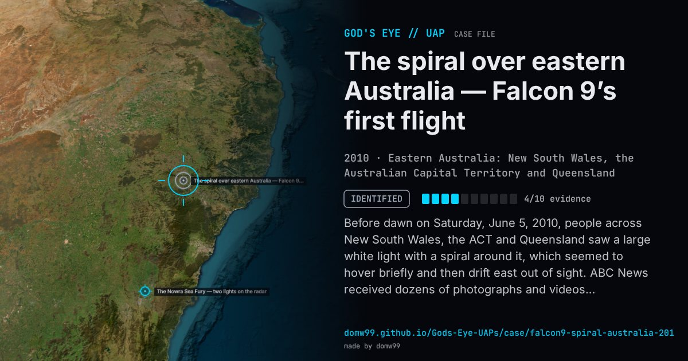

The spiral over eastern Australia — Falcon 9’s first flight

Before dawn on Saturday, June 5, 2010, people across New South Wales, the ACT and Queensland saw a large white light with a spiral around it, which seemed to hover briefly and then drift east out of sight. ABC News received dozens of photographs and videos. Astronomers first suggested space junk, a satellite or a rocket, and Sydney Observatory’s Geoffrey Wyatt suggested a rocket spun for stability. The answer came within a day: the Falcon 9 rocket, flying for the first time, had lifted off from Florida at 2:45 p.m. EDT on June 4 (4:45 a.m. in Sydney), and its second stage, with the Dragon qualification unit attached, was due over eastern Australia between about 5:30 and 5:45 a.m. The second stage had been rotating unexpectedly during the flight.
Explanation
The second stage of the first SpaceX Falcon 9, launched from Cape Canaveral at 18:45 UTC on June 4 with a test Dragon capsule, passed over eastern Australia about an hour later. The stage was rolling, and propellant or gas leaking from it formed a lit spiral, as the Bulava missile’s did over Norway six months earlier. Satellite observers matched the time and the ground track; Sydney Observatory also said it was the rocket.
What was seen
Shape: A large white light with a spiral, “lollipop-type swirl”
Witnesses: Dozens of people who sent photographs and videos to ABC News, among many others
Duration: Minutes
Sources
- iTWire — UFO in Australia explained: Falcon 9
- Space.com — “UFO” spotted over Australia likely a private rocket
Browse
- Australia
- 2010s
- Identified
- Photo and video cases
- Many independent witnesses
- Photographs
- Video footage
- Lights and fireballs